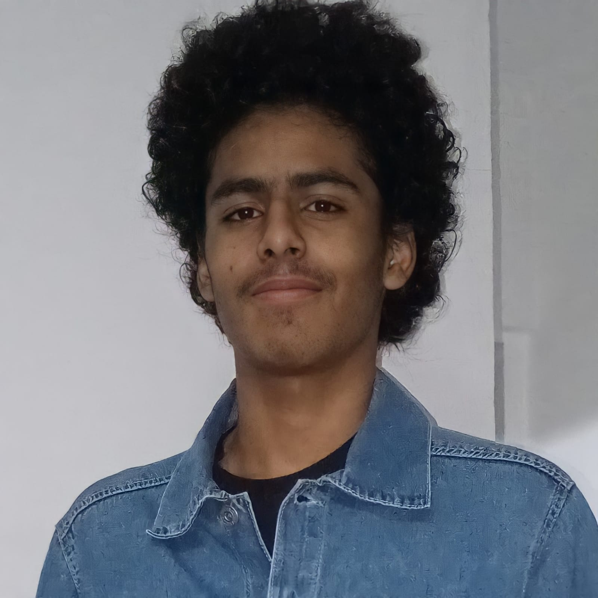

|  |
Nascido em 12 de fevereiro de 2004 Natural de São Paulo - Capital Estudante do IFSP - Câmpus Guarulhos Modalidade técnico em informática integrado Gerente da JJ Assuntos Técnicos© Editor de videos e fotos |
Meus gostos

Gosto de praticar alguns esportes em específico mesmo, como vôlei, corrida, as vezes futebol e também, alguns exercícios e alongamentos as vezes.

Desde 2018, tenho a vontade de jogar alguma partida de RPG, mas como eu nunca achei um grupo para jogar, fica mais apenas como uma vontade.

Curto bastante o mundo dos Jogos, desde os mais complexos aos mais simples, inclusive meus amigos tem essa mesma ideia que eu, por isso a gente sempre gosta de fazer coisas mais criativas que antes.

A parte que mais gosto do meu curso, é a área de hardware, poder abrir e modificar as qualquer coisa eletrônica manualmente é um dos meus maiores prazeres (ah, mas isso não signifca que programação é chata para mim).(
Minhas conquistas

Antigamente eu era bastante participativo em vários tipos de competições, mas a maioria não era tão conhecida e nem davam prêmios também, além de que perdi alguns certificados

Tenho uma coletânea de 5 medalhas ao total, 3 delas é da competição "matemática sem fronteiras", uma é de um campeonato de futebol que aconteceu na UNG, e a última eu nem sei como eu conseguui.
Planos futuros

Prentendo seguir em instituições militares, minha maior meta é a "Acadêmia do barro branco", mas se não for possivel, eu quero ingressar de qualquer forma.

Mesmo com um objetivo em vista, ainda sim quero continuar no ramos das tecnologias, hardwares e softwares.